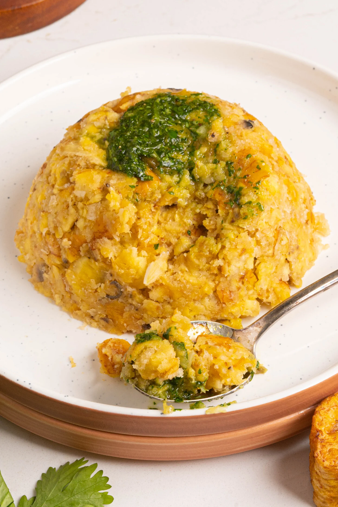

Mofongo Recipe

Mofongo is a popular Puerto Rican side dish made with fried green plantains mashed by hand together with chicharrones (crispy pork skin) and fresh garlic.
It's traditionally served with a red shrimp sauce (camarones guisados) or chicken broth, and makes for a super delicious side.
Because of the crispy texture from the pork rinds, it's best enjoyed fresh!
Ingredients:
- vegetable oil for frying the plantains
- green plantains
- garlic cloves
- chicharrón (crispy pork skin)
Steps:
- Start by heating your oil in a heavy bottomed frying pan over medium heat.
While your oil is heating, prep the plantains by peeling them and slicing into 1 inch thick slices.
- Once the oil is hot, gently add in the plantain slices and fry until golden brown and cooked through,
making sure not to overcrowd the pan. Cooking them through should take about 10 minutes,
continuing to move them around in the oil occasionally so they cook evenly.
- Once fully cooked, remove them from the oil and dry on a paper towel lined plate.
- In a large bowl or your mortar and pestle, add the garlic and chicharrones and mash (using the back of a wooden spoon if you don't have a mortar and pestle).
Add the fried plantain slices and mash them in with the garlic and pork rinds.
- To serve your Puerto Rican Mofongo, fill a small bowl with the mashed plantains and flip onto a plate,
to get that perfect dome-like shape.
- Top with a blend of cilantro, lime juice, and olive oil and serve with chicken broth or camarones guisados (shrimp in red sauce).